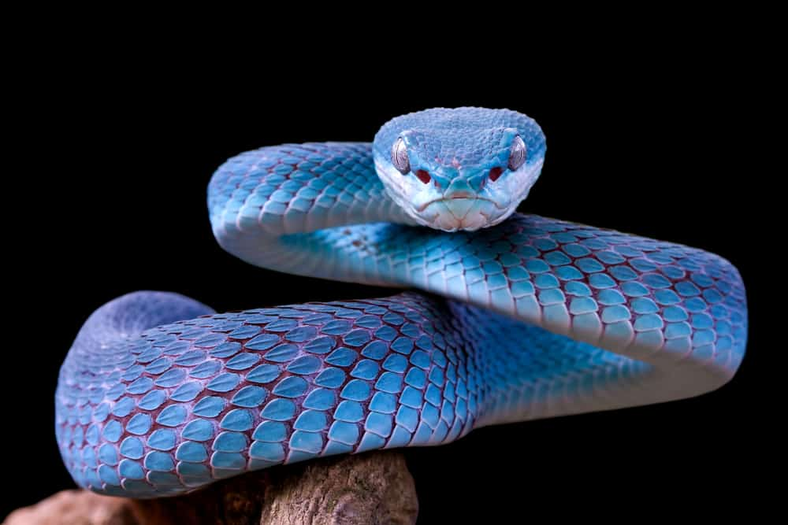

VERNON
***** VERNON VIPERS *****
Vernon is a city in the state NewYork and I choose Vipers as a mascot for this town which represents
braveness
- Vipers are a large family of snakes; the scientific name is Viperidae.
- The family Viperidae includes adders, pit vipers (like rattlesnakes, cottonmouths and copperheads), the
Gaboon viper, green vipers and horned vipers.
- Generally more venomous vipers are in tropical areas, particularly South America and Africa.

Click here to go back to Index.html page